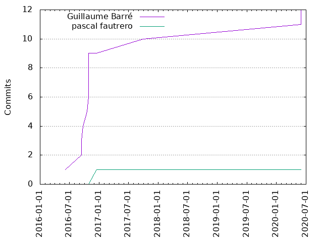

Authors
| Author | Commits (%) | + lines | - lines | First commit | Last commit | Age | Active days | # by commits |
|---|
| Guillaume Barré | 12 (92.31%) | 36156 | 8422 | 2016-06-06 | 2020-06-01 | 1456 days, 5:52:27 | 7 | 1 |
| pascal fautrero | 1 (7.69%) | 1 | 1 | 2016-12-15 | 2016-12-15 | 0:00:00 | 1 | 2 |

| Month | Author | Commits (%) | Next top 5 | Number of authors |
|---|
| 2020-06 | Guillaume Barré | 2 (100.00% of 2) | | 1 |
| 2017-09 | Guillaume Barré | 1 (100.00% of 1) | | 1 |
| 2016-12 | pascal fautrero | 1 (100.00% of 1) | | 1 |
| 2016-10 | Guillaume Barré | 5 (100.00% of 5) | | 1 |
| 2016-09 | Guillaume Barré | 3 (100.00% of 3) | | 1 |
| 2016-06 | Guillaume Barré | 1 (100.00% of 1) | | 1 |
| Year | Author | Commits (%) | Next top 5 | Number of authors |
|---|
| 2020 | Guillaume Barré | 2 (100.00% of 2) | | 1 |
| 2017 | Guillaume Barré | 1 (100.00% of 1) | | 1 |
| 2016 | Guillaume Barré | 9 (90.00% of 10) | pascal fautrero | 2 |
| Domains | Total (%) |
|---|
| ac-versailles.fr | 7 (53.85%) |
|---|
| crdp.ac-versailles.fr | 4 (30.77%) |
|---|
| jrmv.net | 2 (15.38%) |
|---|